통신설비기능장 (2014-03-09 기출문제)
1과목: 임의 과목 구분(20문항)
1. 호의 접속을 위해 몇 개의 교환단계를 거쳐아 하는 교환선군에 대한 설명으로 잘못된 것은?
- 하나의 입선에 동시에 2개의 호가 접속되는 일이 거의 없으며 1개의 출선이 2개의 호에 공용되어진다.
- 입선에 생긴 호는 출선에 접속을 요구한다.
- 출선은 모두 공통의 목적에 사용된다.
- 교환망의 접속상태에 따라 완전선군과 불완전선군으로 분류할 수 있다.
(정답률: 85%)

2. 전화선에 의해 유기되는 갑작스런 전압의 변화에 대한 전자식 전화회로 IC 손상을 방지하기 위해 사용되는 소자는 어느 것인가?
- 저항
- 바리스터(Varistor)
- 콘덴서
- 트랜지스터(Transistor)
(정답률: 94%)
3. 다음 중 동기식다중화(SDH) 순서가 바르게 된 것은?
- 컨테이너 및 가상컨테이너로 매핑, 계위신호단위로 정렬, 계위신호단위그룹으로 다중화, 계위신호단위로 정렬, 관리단위그룹으로 다중화, 관리단위로 정렬, 포인터처리, 연접처리
- 컨테이너 및 가상컨테이너로 매핑, 계위신호단위로 정렬, 계위신호단위그룹으로 다중화, 관리단위로 정렬, 관리단위그룹으로 다중화, 포인터처리, 연접처리
- 포인터처리, 컨테이너 및 가상컨테이너로 매핑, 계위신호단위로 정렬, 계위신호단위그룹으로 다중화, 관리단위로 정렬, 단위그룹으로 다중화, 연접처리
- 포인터처리, 컨테이너 및 가상컨테이너로 매핑, 계위신호단위로 정렬, 계위신호단위그룹으로 다중화, 계위신호단위로 정렬, 관리단위그룹으로 다중화, 관리단위로 정렬, 연접처리
(정답률: 70%)
4. PCM 방식에서 정보의 손실없이 재생하기 위하여 표본화 주파수는 신호 주파수의 최소 몇 배 이상되어야 하는가?
- 1.5배
- 2배
- 3배
- 5배
(정답률: 93%)
5. 자석식 전화기의 측음방지(Anti-side Tone) 회로는 어느 것인가?
- 헤이스형
- 하이브리드형
- 부스터형
- 휘스톤브리지형
(정답률: 90%)
6. 다음 중 전자교환기에서 교환기능을 수행하기 위한 기본회로가 아닌 것은?
- 포착회로
- 계수회로
- 증폭회로
- 확인회로
(정답률: 81%)
7. 다음 중 NO.7 신호방식에 대한 설명으로 적합하지 않은 것은?
- 동기방식은 동기 플래그를 사용한다.
- 64[kbps] 속도로 신호 전송이 가능하다.
- OSI-7 Layer 계층구조를 그대로 사용한다.
- 전화망, 데이터망, ISDN 등에 적용 가능하다.
(정답률: 88%)
8. 다음 중 양자화 잡음의 개선책이 아닌 것은?
- 양자화 계단을 크게 한다.
- 양자화 계단수를 증가시킨다.
- 비선형 양자화를 행한다.
- 압신기를 사용한다.
(정답률: 80%)
9. 양자화 부호 길이가 8비트이면 양자화 계단 수는 얼마인가?
- 64
- 128
- 256
- 512
(정답률: 92%)
10. 네트워크의 5대 관리기능에 속하지 않는 것은?
- 구성관리(Configuration Management)
- 성능관리(Performance Management)
- 고장관리(Fault Management)
- 운영관리(Operating Management)
(정답률: 72%)
11. 방사전력이 Pr[W]인 반파장 다이폴 안테나에서 d[m] 떨어진 점의 전계강도[V/m]는?
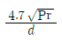
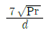
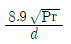
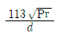
(정답률: 91%)
12. 다음 중 야기안테나에 관한 설명으로 잘못된 것은?
- 반사기, 투사기, 도파기로 구성되어 있다.
- 지향특성은 8자 지향성이다.
- 방송 수신용 안테나로 사용된다.
- 도파기 수를 증가시키면 이득을 높일 수 있다.
(정답률: 88%)
13. 8[MHz] 주파수에서 정상적으로 동작하는 반파장 다이폴 안테나의 길이는 대략 얼마인가?
- 18.8[m]
- 180.8[m]
- 9.4[m]
- 180.4[m]
(정답률: 73%)
14. 다음 중 TDX-10A 이동통신 교환기를 구성하는 서버시스템과 거리가 먼 것은?
- ASS(Access Switching Subsystem)
- INS(Interconnection Network Subsystem)
- CCS(Central Control Subsystem)
- IUS(Interface Unit Subsystem)
(정답률: 69%)
15. 다음 중 이동통신 기지국 제어장치(BSC)의 Vocoder/Transcoder(음성부호화 및 복호화기)에 대한 설명으로 거리가 먼 것은?
- 교환기의 Network Interface와의 정합을 담당하는 서비시스템이다.
- 이동국 착ㆍ발신 신호에 대해 음성부호화 및 복호화 기능을 수행한다.
- 고정국 착ㆍ발신 신호에 대해 음성부호화 및 복호화 기능을 수행한다.
- 네트워크 발생 및 감지기능을 제공한다.
(정답률: 74%)
16. 다음 중 이동통신 시스템에서 기지국으로부터 거리에 따라 전파의 세기가 변화되는 현상을 무엇이라고 하는가?
- Long-term 페이딩
- Short-term 페이딩
- 주파수 선택적 페이딩
- 지연확산
(정답률: 87%)
17. 전파법령에서 정의하는 ‘억압반송파’에 대한 설명으로 적절한 것은?
- 수신측에서 복조에 사용하지 않는 반송파를 억압하여 송출하는 전파이다.
- 수신측에서 복조에 사용하는 반송파를 억압하여 송출하는 전파이다.
- 송신측에서 변조에 사용하는 반송파를 일정레벨 억압하여 송출하는 전파이다.
- 송신측에서 변조에 사용하는 반송파를 억압하여 송출하는 전파이다.
(정답률: 61%)
18. 다음 중 송신기 구성요소와 관계가 없는 것은?
- 발진회로
- 증폭회로
- 변조회로
- AGC회로
(정답률: 86%)
19. 아래 회로는 OP-Amp를 활용한 신호 증폭 회로의 증폭도는 얼마인가?
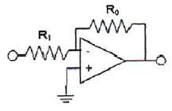
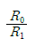
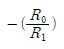
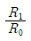
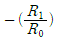
(정답률: 85%)
20. 다음 중 이동전화시스템의 교환기에 대한 설명으로 거리가 먼 것은?
- 각 기지국에서의 발호 및 착호를 처리한다.
- 기지국과 이동전화 단말기간 중계역할을 한다.
- 공중전화망(PSTN)의 교환기와 연결할 수 있는 기능을 갖는다.
- 통화가 완료된 호에 대한 과금 자료 수집기능이 있다.
(정답률: 57%)
2과목: 임의 과목 구분(20문항)
21. FDMA, TDMA 또는 CDMA 방식에서 서로 다른 이동통신 교환국간 핸드오프(Hand Off) 방식을 무엇이라 하는가?
- 하드 핸드 오프(Hard Hand Off)
- 소프트 핸드 오프(Soft Hand Off)
- 소프터 핸드 오프(Softer Hand Off)
- 소프트 핸드 오버(Soft hand Over)
(정답률: 93%)
22. 다음 중 위성통신에 사용되는 다원접속의 방법이 아닌 것은?
- TDMA
- WDMA
- SDMA
- FDMA
(정답률: 69%)
23. BPF(Band Pass Filter)의 입력전압 Vi와 출력전압 Vo의 관계식이 아래와 같다면 공진주파수(혹은 중심주파수)는?
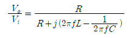
- f=LC
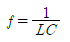
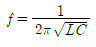
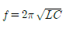
(정답률: 82%)
24. 다음 중 가상랜(VLAN)에 대한 설명으로 적합하지 않은 것은?
- 네트워크 구성의 변경이 소프트웨어적으로 처리될 수 있다.
- 네트워크의 대역폭을 효율적으로 활용할 수 있다.
- 네트워크에 보안성과 안정성을 강화시킬 수 있다.
- 브리지를 통해 VLAN 사이의 데이터 통신을 수행할 수 있다.
(정답률: 71%)
25. 다음 중 ARQ에 대한 설명으로 적합하지 않은 것은?
- 재전송을 위해서 역채널이 필요하다.
- 전송중인 데이터 블록을 저장해야 하므로 저장장치인 버퍼가 요구된다.
- 오류검출만 하도록 잉여비트를 추가하므로 오류처리를 위한 비트의 낭비를 줄일 수 있다.
- 수신측 내에 최대 블록 크기의 버퍼를 한 개만 가져도 된다.
(정답률: 70%)
26. 이동통신시스템에 사용 중인 셀룰러방식에서 효율적인 주파수 자원관리를 위하여 주파수 재사용을 하고 있다. 만약, 주파수 재사용 계수 K가 27일 때, 셀의 반경 R이 10[km]라면 주파수 재사용 거리 D는 얼마인가?
- 27[km]
- 44[km]
- 62[km]
- 90[km]
(정답률: 55%)
27. 다음 중 무선 홈 네트워크 기술이 아닌 것은?
- IEEE802.11
- USB 3.0
- 블루투스
- 홈 RF
(정답률: 91%)
28. 다음 중 CATV에 대한 설명으로 적합하지 않은 것은?
- 대부분의 전송로는 HFC 방식을 사용한다.
- 쌍방향 통신이 가능하다.
- 지상파 TV 방송과 컬러색상의 구조 및 주사방식이 서로 다르다.
- 다채널로서 방송뿐만 아니라 초고속 정보통신서비스가 가능하다.
(정답률: 75%)
29. 다음 중 프로토콜의 기능에 대한 설명으로 적합하지 않은 것은?
- 캡슐화 : 전송 데이터에 제어정보를 추가하는 기능이다.
- 순서제어 : 수신한 데이터의 순서가 바르게 하도록 하는 기능이다.
- 다중화 : 사용자마다 물리적인 회선을 할당해 전송하는 기능이다.
- 분할(다중화) : 전송 데이터를 적절한 크기로 분할하는 기능이다.
(정답률: 80%)
30. 무선통신 시스템에서 전송용량이 10,000[bps]이고, 신호대잡음비(S/N)=10[dB]일 때 필요한 대역폭은? (단, 소수점 첫 번째 자리에서 반올림할 것)
- 2891[Hz]
- 3001[Hz]
- 2801[Hz]
- 1445[Hz]
(정답률: 73%)
31. 다음 중 일반적인 TCP/IP 프로토콜의 응용 서비스와 포트 번호의 연결이 적합하지 않은 것은?
- HTTP : 80
- DNS : 53
- FTP : 21
- TELNET : 25
(정답률: 87%)
32. 중앙에 제어노드가 있고 모든 노드가 점대점으로 연결된 구성 형태의 LAN은?
- 그물형(Mesh Type)
- 스타형(Star Type)
- 버스형(Bus Type)
- 링형(Ring Type)
(정답률: 89%)
33. RIP 라우팅 프로토콜에 대한 최대 홉(Hop) 수와 라우팅 테이블의 업데이트 시간은?
- 15[Hops], 30[sec]
- 15[Hops], 180[sec]
- 255[Hops], 30[sec]
- 255[Hops], 180[sec]
(정답률: 89%)
34. 광송신기의 출력이 -3[dBm]이고, 광수신기의수신감도가 -16[dBm]이며, 광섬유의 손실이 1[dB/km]이다. 여기에 접속손실과 광커넥터 손실을 무시한다면 고아전송 시스템이 무중계 전송 가능한 최대 거리는 얼마가 되는가?
- 12[km]
- 13[km]
- 39[km]
- 108[km]
(정답률: 77%)
35. 굴절률이 1.5인 유리로 빛이 진행할 때 공기와 유리의 경계에서 반사되는 전력은 몇 [%]인가? (공기의 굴절율은 1이다.)
- 1[%]
- 2[%]
- 4[%]
- 10[%]
(정답률: 73%)
36. 다음에서 설명하는 케이블 종류는 무엇인가?
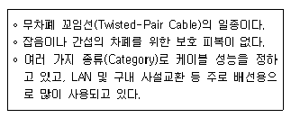
- STP 케이블
- UTP 케이블
- PIC 케이블
- SMF 케이블
(정답률: 89%)
37. 다음 중 STP 케이블에 대한 설명으로 적합하지 않은 것은?
- UTP 케이블보다 전송가능 속도가 높다.
- UTP 케이블보다 외부의 전기적 간섭에 영향을 덜 받는다.
- UTP 이블에 비해 비싸다.
- UTP 케이블에 비해 전기장치 잡음이나 전자기장에 영향을 많이 받는다.
(정답률: 86%)
38. 광섬유의 전파모드에 대한 설명으로 틀린 것은?
- 전파모드는 광섬유 경계면에 대한 입사각, 경계조건 등에 따라 광파의 전달이 제한되는 것이다.
- 광섬유에서 전파모드는 90도에서 임계각을 뺀 각도에 따라서 제한된다.
- 광섬유를 통하여 전송되는 빛의 전파모드에서 정재파가 횡 방향으로 생긴다.
- 다중모드 광섬유는 싱글모드 광섬유에 비하여 장거리 전송에 용이하다.
(정답률: 74%)
39. 다음 중 광 커넥터의 요구사항으로 적합한 것은?
- 접속손실이 커야 한다.
- 내구성이 있어야 한다.
- 주파수 변화의 영향이 커야 한다.
- 조립이 복잡하여야 한다.
(정답률: 91%)
40. 다음 중 광섬유의 종류에 대한 설명으로 틀린 것은?
- 단일모드 광섬유는 고속신호의 전송에 사용된다.
- 다중모드 광섬유는 낮은 부호 속도의 전송에 사용된다.
- 단일모드 광섬유는 광원과의 결합 효율이 높고, 광섬유끼리의 접속이 용이하다.
- 다중모드 광섬유는 여러 개의 모드가 전파 가능하다.
(정답률: 76%)
3과목: 임의 과목 구분(20문항)
41. 광케이블을 포설 후 융착접속을 하고자 한다.
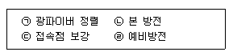
- ㉠→㉡→㉢→㉣
- ㉠→㉣→㉢→㉡
- ㉠→㉣→㉡→㉢
- ㉢→㉣→㉡→㉠
(정답률: 90%)
42. 케이블 매설위치를 탐색하고자 측정기를 매설위치 바로 위의 대지에 놓았을 때 발진음의 상태는?
- 수직으로 놓았을 때 최대음, 수평으로 놓았을 때 최소가 된다.
- 수직으로 놓았을 때 최소음, 수평으로 놓았을 때 최대가 된다.
- 수직, 수평 모두 최대음이 된다.
- 수직, 수평 모두 발진음이 나타나지 않는다.
(정답률: 91%)
43. 광 전력을 측정하였더니 1[μW]이었다. 절대레벨로 나타내면 몇 [dBm]인가?
- 0[dBm]
- -10[dBm]
- -20[dBm]
- -30[dBm]
(정답률: 68%)
44. 다중모드 광섬유의 대역폭을 측정할 때 사용해야 하는 측정법은?
- 컷백법
- 삽입법
- 후방산란법
- 주파수영역법
(정답률: 61%)
45. 어떤 물리량을 측정할 경우 그것과 같은 종류의 어떤 일정량을 기준으로 하여 몇 배가 되는가를 측정하게 되는데 이 비교 기준을 무엇이라 하는가?
- 측정
- 오차
- 보정
- 단위
(정답률: 79%)
46. 전압의 측정 범위을 넓히기 위하여 사용하는 것은?
- 배율기
- 분류기
- 분압기
- 변류기
(정답률: 88%)
47. 다음 중 수신기의 특정 측정에 의사공중선을 사용하는 가장 큰 이유는?
- 수신기의 입력전압이 너무 커지기 때문에
- 표준 사용상태의 특성을 알기 위하여
- 수신기의 입력전압이 너무 작아지기 때문에
- 잡음이 들어오는 것을 방지하기 위하여
(정답률: 78%)
48. 시내 케이블에 건조 공기를 주입하는 목적으로 잘못된 것은?
- 케이블의 장애 예방
- 공기층에 의한 누화, 잡음 증가
- 케이블의 절연 향상
- 유효 수명의 연장
(정답률: 83%)
49. 다음 중 방송공동수신안테나시설에 해당되지 않는 설비는 무엇인가?
- 레벨조정기
- 신호처리기
- 분배기
- 중계기
(정답률: 71%)
50. 다음 중 방송통신설비의 분계점에 대한 설명으로 잘못된 것은?
- 사어용방송통신설비의 분계점은 사업자의 독자적인 결정에 따른다. 다만, 미래창조과학부장관이 분계점을 고시한 경우에는 이에 따른다.
- 사업용방송통신설비와 이용자방송통신설비의 분계점은 도로와 택지 또는 공동주택단지의 각 단지와의 경계점으로 한다.
- 국선과 구내선의 분계점은 사업용방송통신설비의 국선접속설비와 이용자방송통신설비가 최초로 접속되는 점으로 한다.
- 분계점에서의 접속방식은 간단하게 분리ㆍ시험할 수 있어야 한다.
(정답률: 73%)
51. 주거용건축물의 국선단자 함에서 세대 내 인출구까지 꼬임케이블을 배선할 경우 구내배선 설비의 링크성능은 얼마 이상의 전송특성이 유지되도록 하여야 하는가?
- 100[MHz]
- 120[MHz]
- 140[MHz]
- 160[MHz]
(정답률: 72%)
52. 이동통신서비스 또는 휴대인터넷서비스 등에 사용되는 무선송수신기와 안테나간에 연결하는 선로를 무엇이라 하는가?
- 급전선
- 통신케이블
- 통신회선
- 통신선로
(정답률: 82%)
53. 방송 공동수신안테나 시설과 관련이 없는 서비스방송은 무엇인가?
- 지상파 텔레비전 방송
- 위성방송
- 종합유선방송
- FM라디오 방송
(정답률: 76%)
54. 구내통신설비의 기술기준에서 통신공동구의관로는 가스등 다른 매설물과 일반적으로 최소 어느 정도 이격시켜야 하는가?
- 30[cm] 이상
- 50[cm] 이상
- 70[cm] 이상
- 90[cm] 이상
(정답률: 60%)
55. ABC 분석기법에서 총 사용금액에 대한 비율이 대략 15~20[%]인 품목 집단은?
- B급 품목
- C급 품목
- A급 품목
- 기타 품목
(정답률: 84%)
56. 현품운반에 있어서 간접공의 운반과 가장 관계가 먼 것은?
- 양적으로 클 것
- 운반거리가 길 것
- 슈트나 컨베이어를 이용하여 이동시킬 것
- 계획적으로 운반될 것
(정답률: 71%)
57. 다음 중 작업방법 연구에 있어서 작업분석에 해당하지 않는 것은?
- 공동작업 분석
- 작업장 배치
- 스톱워치(Stop Watch)법
- 셋업 분석
(정답률: 82%)
58. 기업의 현재 역량 및 환경을 분석하고자 한다. 각요인들을 내부 및 외부 요소로 나누고, 이를 다시 긍정적 혹은 부정적인 면으로 나누어 살펴보는 분석기법을 무엇이라 하는가?
- 델파이 기법
- SWOT 분석
- 브레인스토밍
- 공정분석
(정답률: 73%)
59. LOT에 대한 설명 중 틀린 것은?
- LOT의 의미는 단위생산수량으로서 여러 개의 수량을 한 묶음이나 한 단위로 하여 생산이 이루어지는 경우의 단위이다.
- LOT의 수는 일정한 제조회수를 표시하는 개념이다.
- LOT의 종류에는 제조명령 LOT도 있다.
- LOT의 수를 예정생산 목표량으로 나눈 것이 LOT의 크기이다.
(정답률: 78%)
60. 생산에서 자재가 제품으로 변환하는 과정을 (A)이라 하고, 이러한 변환과정을 행하기 위한 자원의 활동을 (B)이라 한다. (C)는 (A)과 (B)을 대상으로 한 과학적인 조사ㆍ연구를 통하여 시스템에서의 낭비요소를 제거하고 효과적이고 합리적인 생산시스템을 모색하여, 이를 작업표준으로 설정하는 정을 말한다. 빈칸네 들어갈 용어로 가장 적당한 것은?
- A: 활동, B: 이동, C: 작업활동연구
- A: 공정, B: 작업, C: 작업방법연구
- A: 작업, B: 공정, C: 작업방법연구
- A: 공정, B: 작업, C: 작업시간연구
(정답률: 86%)